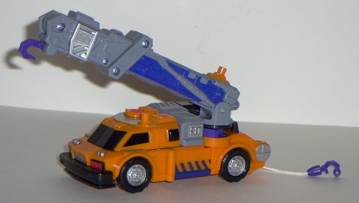

Liftor
Liftor
Allegiance : Minicon
Size : Mini-Con
Difficulty of Transformation : Very Easy
Color Scheme : Dark blue, black, gray, bright orange, and some silver and dark aquatic blue
Rating : 7.6
Liftor
Allegiance
: Minicon
Size
: Mini-Con
Difficulty of Transformation
: Very
Easy
Color Scheme
: Dark blue, black,
gray, bright orange, and some silver and dark aquatic blue
Rating
: 7.6
Vehicle mode is some
kind of futuristic forklift-like vehicle. The forklift parts on the front
are angled and sharp, though, giving Liftor an appearance not unlike that
of some kind of wheeled robotic stag beetle as well. This mold is detailed
pretty well mold-wise- the miniature lights and windows on the back are
especially cool-looking. Liftor could use more paint detailing, though,
as the only detailing he has to speak of in that area is a blue streak
down the back (and his painted eyes in robot mode). The robot arms are
also painfully obvious on the sides.
In robot mode, Liftor
is one cool Minicon. His face has a lot of personality to it, for one-
the large "monocle"-like optic makes him look almost snooty. The halves
of the forklift and the wheels on top of his shoulders actually complement
this mode as "armor" rather than subtract from it. The hollow front of
the vehicle mode on the back subtracts a little from the look, but since
it doesn't get in the way, it's no big deal. Liftor also has plenty of
articulation for such a small toy- he can move at the head, hips, knees,
shoulders (in two places each), and at the elbows. The legs don't seperate
as much as I'd like, though, and considering that they're hollow on the
insides, it's a little too hard to get Liftor to stand up in a good position.
Liftor's hardpoint link is in his chest in this mode.
Liftor is a very nice
Minicon, with great articulation, mold detailing, and an awesome robot
mode. He needs more paint detailing, though, and his arms in vehicle mode
are very obvious, which are his only major downfalls.
 Smokescreen
Smokescreen

Allegiance
: Autobot
Size
: Super-Con
Difficulty of Transformation
: Easy
Color Scheme
: Bright orange, gray,
black, silver, dark blue, dark aquatic blue, and some flat red and shiny
blue-gray
Powerlinx points
: 3 (1 gimmicked)
Rating
: 7.1
Smokescreen's vehicle mode is a futuristic, meched-up crane. The detailing in this mode is simply awesome, with armor, bolts, and the like molded in everywhere. Silver and blue are also used liberally in this mode, to really bring out some of the otherwise "hidden" mold detailing on the bright orange. The Autobot symbol on the right front top of the vehicle can be lifted up to reveal some "manhole cover"-like detailing, as if that was how one entered the super-crane. Nifty. The only thing I dislike about this mode is its orange coloration. Orange in this shade just doesn't fit a crane that well, in my opinion. Now, if it was a much duller orange, or a brown or gray color, it'd look better, in my opinion. It's a couple shades too bright for my tastes. The blue and gray parts look wonderful, though, especially on the crane arm, which is covered in detailing and is BIG and BULKY when compared to the rest of the vehicle mode. The hook doesn't lower, though, due to the (awesome) Minicon gimmick- attach a Minicon the the Powerlinx point on the back of the crane and push forward, and the crane DOUBLES in length! It's now simply enormous, and it can fire a missile to boot! Smokescreen can reign in his towline hook on his rear if you roll him forward in this mode as well, his "lesser" gimmick. The Powerlinx point on the hook isn't long enough to really hold a Minicon on it while it's moving, though, which sorta negates the whole thing. Luckily, if you don't like this gimmick, you can simply flip a switch near the rear of the crane and turn it off. Nice touch, there- it prevents the gimmick from becoming annoying. There's also one other dormant Powerlinx point on the roof part below the crane arm. It's a bit too close to the crane arm to allow any more than the lowest-riding Minicons to hook on to it, though. It would have been better if this were on the other side of the roof, with the Autobot symbol & detailing being on the half under the crane arm. Another quibble with the vehicle mode- Smokescreen's robot mode is also a bit visible on the rear area. Meh.
Smokescreen's robot
mode, on the other hand... could use a bit of work. The arms have no real
elbows- they can move slightly at that area, but that's only a side effect
of the "slide-out arms" part of the transformation. Any movement is negligable.
Also, the hands are on the inside of the vehicle windows, and it's hard
to see them in almost any angle except with the arm positioned straight
out. The hands are also too big proportionally, and there's no discernable
elbows even molded into the thing. As for the legs, they look alright,
but they are a bit short. I suppose this is Smokescreen's schtick- he's
short for a Super-Con, and beefy- but it would help the image some if Smokescreen
had any discernable knees. As it stands, his legs can rotate from side
to side at the "knees" (although they're actually only about 1/4th down
the leg), and his hips are on ball joints, but other than that, no leg
movement either. It says something when Smokescreen's Minicon has more
articulation than Smokescreen himself does. Smokescreen's feet also have
no heels- as such, he's a little prone to falling over on his backside.
Smokescreen's face is also rather badly sculpted- I mean, it's one thing
to look beefy, but he just looks... chunky. And I hate his wide, fat nose.
As for the rest of Smokescreen (i.e., his shoulders, waist, chest, and
crane arm), it's sculpted pretty good, and is proportional. What really
makes Smokescreen stand out, though, is his huge crane arm-gun. When extended,
it's absolutely HUGE compared to Smokescreen- more than twice as long as
he is tall! As a result, he's hard to balance when his gun's extended,
but I can forgive this, since it looks so cool.
Smokescreen has a very
nice vehicle mode, but his robot mode has some definite problems. His crane-gun
is almost worth the price of admission in and of itself, though.
Review by Beastbot